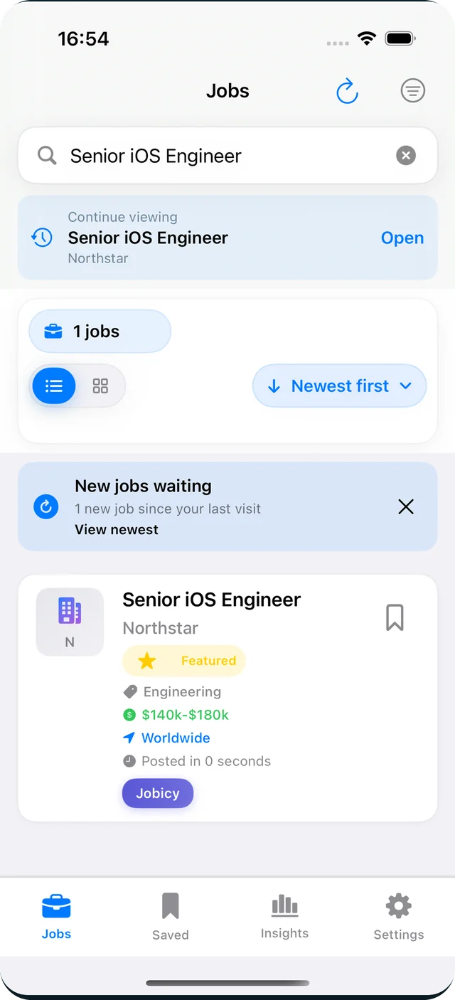
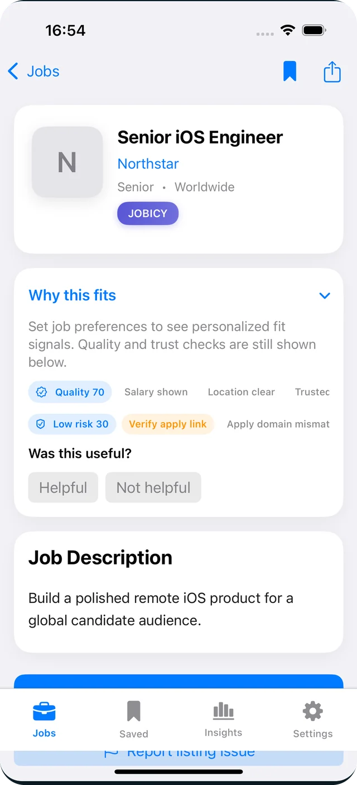
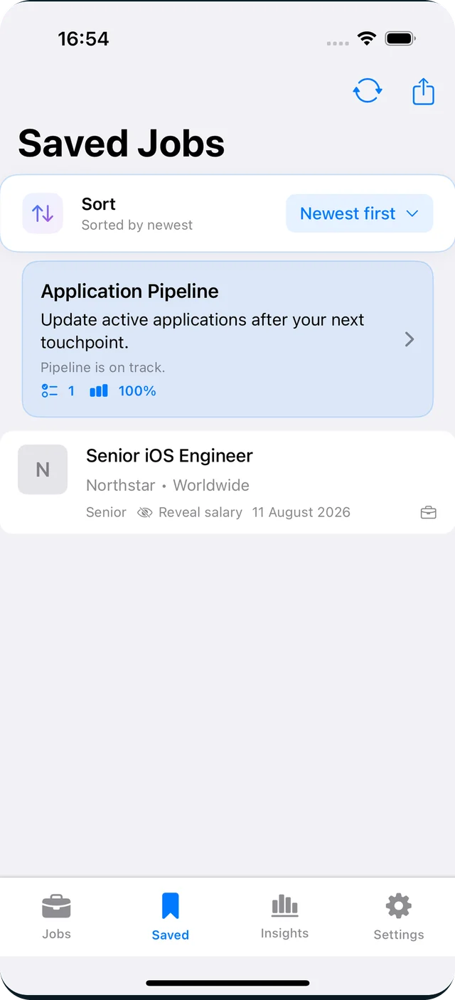
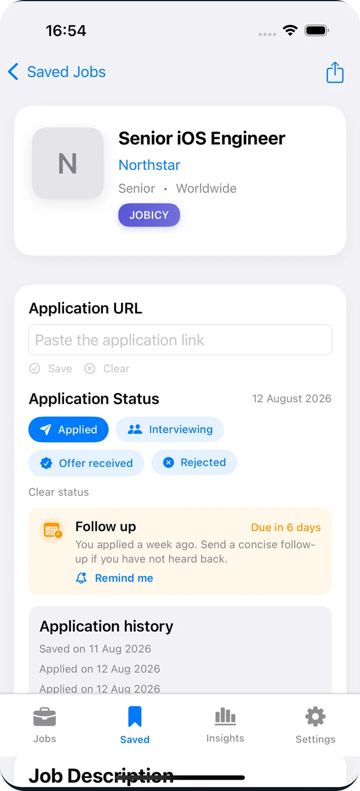
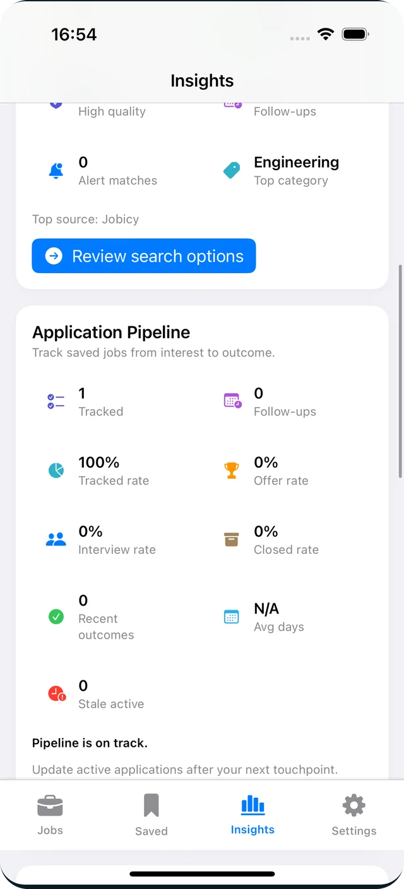
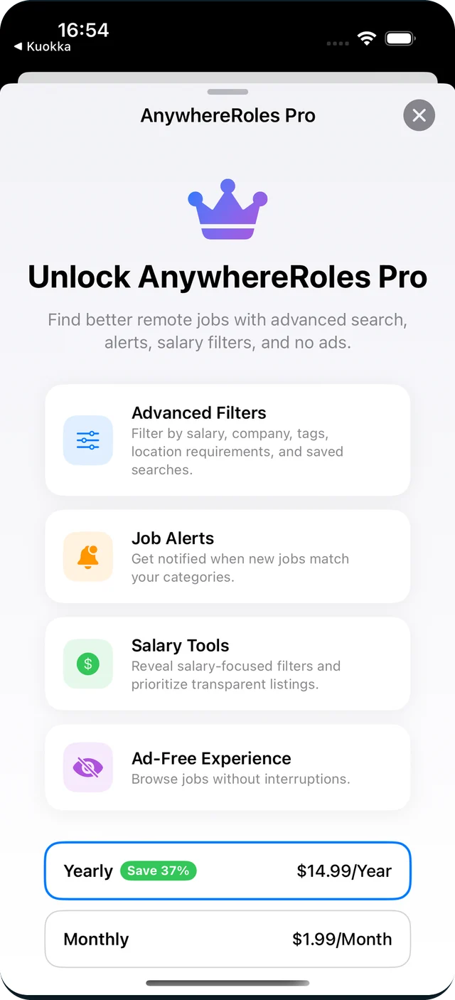

Discover
Browse remote roles pulled from multiple sources, with source badges and a direct link to the original posting when you're ready to apply.
Android & iOS · Remote job search
AnywhereRoles brings remote roles from multiple trusted sources into one native app. Filter out the noise, understand why a role fits, save strong matches, and keep every application moving — without living in a dozen browser tabs.
Free to download. No sign-up needed to start browsing.

How it works
Most job apps stop at search. AnywhereRoles covers the whole loop — from the first listing you open to the follow-up you nearly forgot.
Browse remote roles pulled from multiple sources, with source badges and a direct link to the original posting when you're ready to apply.
Cut the list down by salary, category, company, tags, region, date and source — or describe what you want in plain language and let the app build the filters.
Save roles with notes, tags and folders, then move them through applied, interviewing, offer or rejected with reminders for the next step.
Salary insights, market statistics and company pages with hiring velocity and remote-policy signals help you compare offers before you commit.
Inside the app
Every screen is native — no web views, no wrapped job board.
Search, sort and scan listings from every connected source in one feed.

Remote-fit scoring plus trust signals for salary visibility, location clarity, freshness and duplicates.

Notes, tags and folders turn a bookmark list into a real shortlist.

Saved, applied, interviewing, offer or rejected — with reminders so nothing goes cold.

Fresh roles, alert activity, pipeline health and the next best action, once a week.
Scroll for more screens
Features
The parts of a job search that usually end up in a spreadsheet are built into the app.
Platforms
Domain logic, networking, persistence and presentation live in a shared Kotlin Multiplatform module. Each platform keeps its own native UI and its own platform conventions.
Clean architecture across data, domain and presentation, with Kotlin Flow driving state on both platforms — so a feature shipped once behaves the same in Compose and in SwiftUI.
AnywhereRoles Pro
Everything you need to browse, save and track is free. Pro removes the limits and the ads when you're running a real search.

Download AnywhereRoles on Android or iOS and run your job search with more focus, better organisation and less friction.